Welcome to The Journey of Dried Fish
Traditional fish drying techniques in action
Discover the traditional art of drying fish from the Philippines with our comprehensive guide. Whether you're a beginner or experienced, learn everything about preserving fish the Filipino way.
Popular Philippine Dried Fish
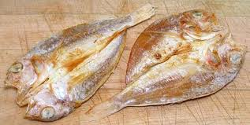
Daing
Split fish marinated in vinegar and salt
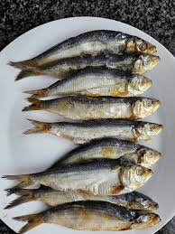
Tuyo
Salted dried fish, a breakfast staple
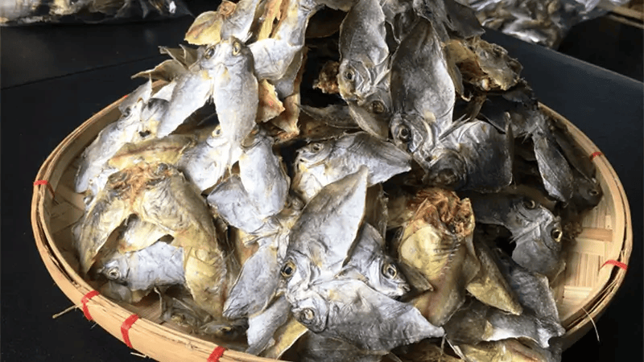
Danggit
Dried rabbitfish popular in Cebu
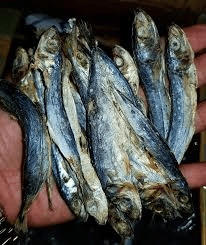
Bulad
Visayan term for various dried fish
Get Started
Philippine Fish Types for Drying
The Philippines is rich with fish varieties that are perfect for drying. Here are some of the most commonly used species:
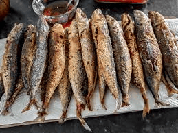
Galunggong (Mackerel Scad)
A common fish used for making tuyo with an ideal oil content for drying.
- Drying Time: 8-10 hours
- Best Method: Salt-drying
- Difficulty: Easy
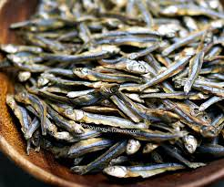
Dilis (Anchovies)
Small fish that dry quickly and are often consumed whole.
- Drying Time: 4-6 hours
- Best Method: Sun-drying
- Difficulty: Very Easy
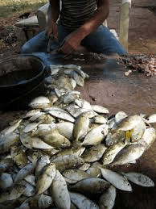
Danggit (Rabbitfish)
A Cebuano delicacy known for its unique flavor when dried.
- Drying Time: 6-8 hours
- Best Method: Vinegar-salt marinade
- Difficulty: Medium
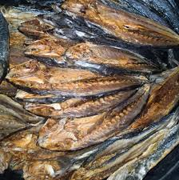
Tulingan (Mackerel)
Larger fish often split before drying for even preservation.
- Drying Time: 10-12 hours
- Best Method: Split-drying
- Difficulty: Medium
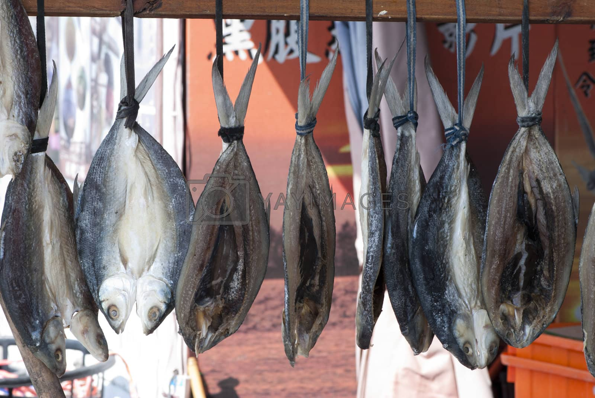
Bangus (Milkfish)
National fish of the Philippines, perfect for daing when butterflied.
- Drying Time: 8-10 hours
- Best Method: Vinegar-salt marinade
- Difficulty: Medium
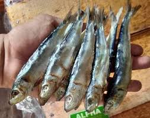
Tamban (Sardines)
Small, oily fish that make excellent tuyo with a rich flavor.
- Drying Time: 5-7 hours
- Best Method: Salt-drying
- Difficulty: Easy
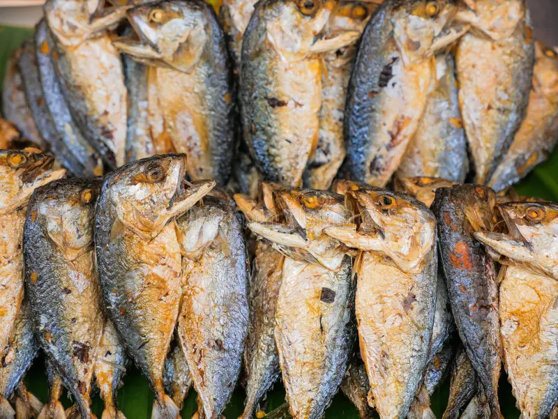
Hasa-Hasa (Short Mackerel)
Popular in Visayan regions, known for its tender meat when dried.
- Drying Time: 7-9 hours
- Best Method: Split-drying
- Difficulty: Medium
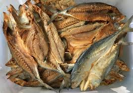
Alumahan (Long-finned Mackerel)
Firm-fleshed fish that holds its shape well during the drying process.
- Drying Time: 9-11 hours
- Best Method: Salt-drying
- Difficulty: Medium
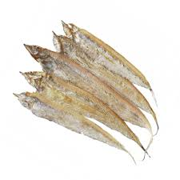
Espada (Swordfish)
Often sliced into thin fillets before drying for quick and even results.
- Drying Time: 6-8 hours
- Best Method: Fillet-drying
- Difficulty: Hard
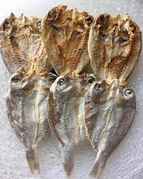
Bisugo (Threadfin Bream)
Produces delicate dried fish with a slightly sweet flavor profile.
- Drying Time: 7-8 hours
- Best Method: Sun-drying
- Difficulty: Medium
Traditional Philippine Drying Methods
Learn the authentic techniques used by generations of Filipino fisherfolk to preserve their catch.
Sun Drying (Pagbilad)
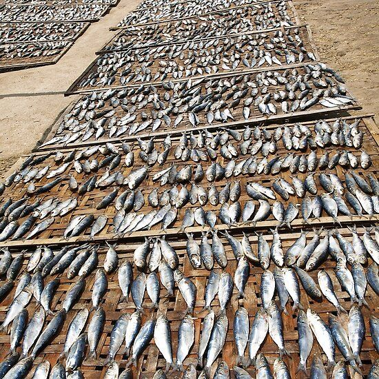
Video Tutorial:
Step-by-step sun drying tutorial
Process:
- Clean and gut the fish thoroughly
- Apply salt generously to the fish
- Arrange on bamboo racks or bilao (flat basket)
- Place under direct sunlight for 6-12 hours
- Turn fish occasionally for even drying
- Store in airtight containers when completely dry
Tips:
- Choose dry, sunny days with low humidity
- Protect from flies with thin mesh covers
- Bring indoors if rain threatens
Vinegar Curing (Daing)
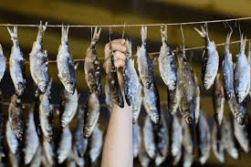
Video Tutorial:
Learn the traditional daing method
Process:
- Clean and butterfly the fish
- Marinate in mixture of vinegar, salt, and garlic
- Let sit overnight in refrigerator
- Drain excess liquid
- Sun-dry for 4-8 hours until firm
- Store in clean, dry containers
Tips:
- Use sukang Iloko (cane vinegar) for authentic flavor
- Add crushed peppercorns for extra spice
- Perfect for milkfish (bangus) and mackerel
Salt-Drying (Tuyo Method)
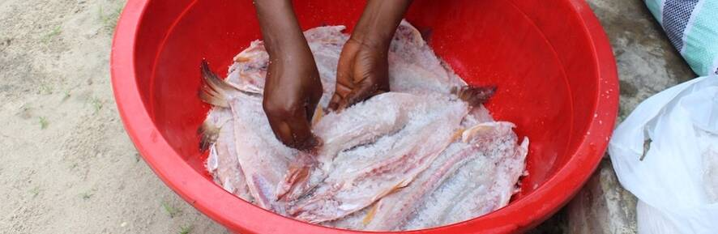
Video Tutorial:
Complete guide to making tuyo
Process:
- Clean fish but leave whole (for small fish)
- Create salt brine solution (1:3 salt to water)
- Soak fish in brine for 4-6 hours
- Remove and drain excess brine
- Sun-dry for 1-2 days until completely dry
- Store in dry, cool place
Tips:
- The longer the brine time, the saltier the fish
- Test dryness by pressing - should be firm with no give
- Best for galunggong, dilis, and tamban
Delicious Dried Fish Recipes
Try these authentic Filipino recipes featuring dried fish:
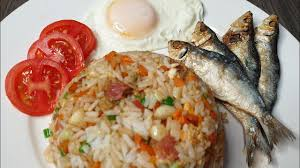
Sinangag na Tuyo
Traditional Filipino garlic fried rice topped with crispy tuyo
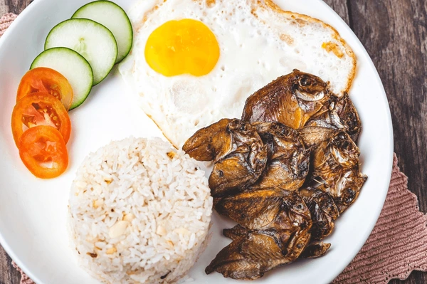
Danggit Silog
Cebuano breakfast with danggit, fried rice, and egg
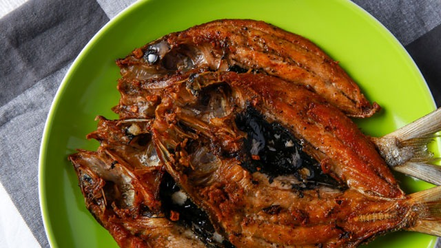
Daing na Bangus
Marinated milkfish fried to perfection
About The Journey of Dried Fish
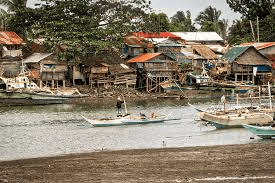
This application is dedicated to preserving the traditional methods of fish drying that have been practiced in the Philippine islands for generations. Dried fish is not just food; it's an important part of Filipino culture and heritage.
Our mission is to document and share these traditional techniques so they can be continued by future generations. We've traveled throughout the Philippine archipelago to learn from the masters of this craft.
Using This App Offline
This app is designed to work completely offline. Once downloaded, you can access all content without an internet connection, making it perfect for use in remote fishing villages or during actual fish drying sessions.
Contact Information
For questions or suggestions about this app, contact us at:
Email: driedfish@example.com